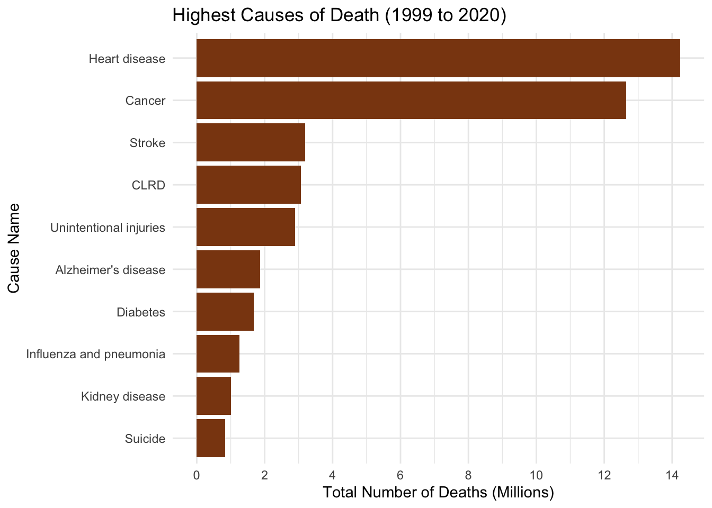
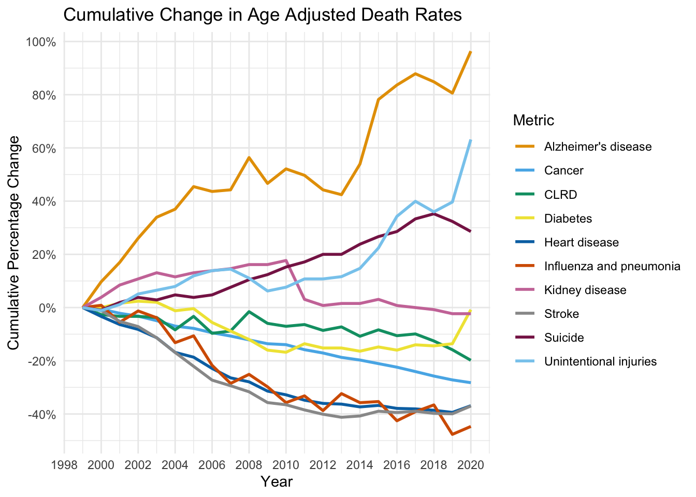

Code
library(dplyr)
library(readr)
library(dplyr)
library(forcats)
library(ggplot2)Warning: package 'ggplot2' was built under R version 4.3.2Code
library(scales)
library(tidyr)library(dplyr)
library(readr)
library(dplyr)
library(forcats)
library(ggplot2)Warning: package 'ggplot2' was built under R version 4.3.2library(scales)
library(tidyr)lead_cod_2 = read_csv("NCHS_-_Leading_Causes_of_Death__United_States.csv")
# BY STATE
lead_cod_2_by_state = lead_cod_2 %>% filter(State != "United States")
# lead_cod_2_by_state
# LOOKING AT USA
lead_cod_2_USA = lead_cod_2 %>% filter(State == "United States")
#lead_cod_2_USA
# FILTER FOR 2008-2017
lead_cod_2_USA_from_2008 = lead_cod_2_USA %>% filter(Year >= 2008)
lead_cod_2_by_state_from_2008 = lead_cod_2_by_state %>% filter(Year >= 2008)####################################################
# "Total Aggregate Deaths by Cause from 1999 through 2017"
# Group to do a factor reorder
lead_cod_2_USA_from_2008_mod <- lead_cod_2_USA %>%
#filter(Year >= 2008) %>%
mutate(`Cause Name` = as.factor(`Cause Name`)) %>% # Ensure 'Cause Name' is a factor
group_by(`Cause Name`) %>%
summarise(Total_Deaths = sum(Deaths, na.rm = TRUE)) %>%
mutate(`Cause Name` = fct_reorder(`Cause Name`, Total_Deaths, .desc=TRUE)) %>%
ungroup()
# Now create the ggplot
ggplot(lead_cod_2_USA_from_2008_mod %>% filter(`Cause Name` != "All causes"), aes(x = `Cause Name`, y = Total_Deaths)) +
geom_bar(stat = "identity", position = "dodge") +
theme(axis.text.x = element_text(angle = 45, hjust = 1)) +
labs(x = "Cause Name", y = "Total Deaths", title = "Top 10 Causes of Deaths from 1999 through 2017")
###################################################The bar chart above identifies 10 most common causes of death in the United States aggregated from year 1999 to 2017. It’s is visible that heart disease and cancer account for a significant bulk of all deaths
# DEATHS INCREASING OVER THE YEARS
yearly_data <- lead_cod_2_USA %>%
group_by(Year) %>%
summarise(Total_Deaths = sum(Deaths, na.rm = TRUE))
# # Create a bar chart
# ggplot(yearly_data, aes(x = Year, y = Total_Deaths)) +
# geom_bar(stat = "identity", position = "dodge") +
# scale_x_continuous(breaks = 1999:max(yearly_data$Year), limits = c(1998, 2018)) +
# theme(axis.text.x = element_text(angle = 45, hjust = 1)) +
# labs(x = "Year", y = "Total Deaths", title = "Total Deaths per Year from 2008 Onwards")
# A time series plot
ggplot(yearly_data, aes(x = Year, y = Total_Deaths)) +
geom_line() +
geom_point() +
scale_x_continuous(breaks = 1999:max(yearly_data$Year), limits = c(1998, 2018)) +
theme(axis.text.x = element_text(angle = 45, hjust = 1)) +
labs(x = "Year", y = "Total Deaths", title = "Total Deaths for each Year from 1999 through 2017") +
scale_y_continuous(breaks = seq(4e6, 5e6, by = 200000),
limits = c(4e6, 5e6))
The deaths have been rising over this period of time, which makes sense because the US population has been steadily growing
# THIS IS BETTER
lead_cod_2_USA_facet_prepare <- lead_cod_2_USA %>%
group_by(Year, `Cause Name`) %>%
summarise(Total_Deaths = sum(Deaths, na.rm = TRUE)) `summarise()` has grouped output by 'Year'. You can override using the
`.groups` argument.cause_order = c("All causes","Heart disease","Cancer","Stroke",
"CLRD", "Unintentional injuries","Alzheimer's disease",
"Diabetes", "Influenza and pneumonia", "Kidney disease","Suicide" )
lead_cod_2_USA_facet_prepare$`Cause Name` <- factor(lead_cod_2_USA_facet_prepare$`Cause Name`, levels = cause_order)
set.seed(1)
my_colors = sapply(1:19, function(x) rgb(runif(1), runif(1), runif(1)))
# BAR CHART
# ggplot(lead_cod_2_USA_facet_prepare %>% filter(`Cause Name` != "All causes"), aes(x = Year, y = Total_Deaths, fill = as.factor(Year))) +
# geom_bar(stat = "identity", position = "dodge") +
# scale_fill_manual(values = my_colors) + # Use manual colors
# theme(axis.text.x = element_text(angle = 45, hjust = 1),
# legend.key.size = unit(0.5, "cm"), # Smaller legend keys
# legend.text = element_text(size = 8)) + # Smaller legend text +
# labs(x = "Year", y = "Total Deaths", fill = "Year",
# title = "Deaths by Cause from 1999-2017") +
# facet_wrap(~ `Cause Name`, scales = "free_y", ncol = 3) # Add faceting
# POINTS
ggplot(lead_cod_2_USA_facet_prepare %>% filter(`Cause Name` != "All causes"), aes(x = Year, y = Total_Deaths, color = as.factor(Year))) +
geom_line() + # Use geom_line for a time series plot
geom_point() + # Optionally add points to highlight each data point
scale_color_manual(values = my_colors) + # Use manual colors
theme(axis.text.x = element_text(angle = 45, hjust = 1),
legend.key.size = unit(0.5, "cm"), # Smaller legend keys
legend.text = element_text(size = 8)) +
labs(x = "Year", y = "Total Deaths", color = "Year",
title = "Deaths by Cause from 1999-2017") +
facet_wrap(~ `Cause Name`, scales = "free_y", ncol = 3) # Add faceting`geom_line()`: Each group consists of only one observation.
ℹ Do you need to adjust the group aesthetic?
`geom_line()`: Each group consists of only one observation.
ℹ Do you need to adjust the group aesthetic?
`geom_line()`: Each group consists of only one observation.
ℹ Do you need to adjust the group aesthetic?
`geom_line()`: Each group consists of only one observation.
ℹ Do you need to adjust the group aesthetic?
`geom_line()`: Each group consists of only one observation.
ℹ Do you need to adjust the group aesthetic?
`geom_line()`: Each group consists of only one observation.
ℹ Do you need to adjust the group aesthetic?
`geom_line()`: Each group consists of only one observation.
ℹ Do you need to adjust the group aesthetic?
`geom_line()`: Each group consists of only one observation.
ℹ Do you need to adjust the group aesthetic?
`geom_line()`: Each group consists of only one observation.
ℹ Do you need to adjust the group aesthetic?
`geom_line()`: Each group consists of only one observation.
ℹ Do you need to adjust the group aesthetic?
The time series plot helps us have an understanding of the magnitude of each category and the evolution across time. We can see that heart disease and cancer are around 15x Suicide making it challenging to analyze the growth of smaller series. We will create a cumulative chart to understand the evolution of each category. A cumulative percentage time series chart will help us compare relative changes of different causes.
# A MODIFICATION
df = lead_cod_2 |> filter(State != "United States")
df$Cause <- df$`Cause Name`
df$Age <- df$`Age-adjusted Death Rate`
df = df |> select(-`113 Cause Name`) |> select(-`Cause Name`) |> select(-`Age-adjusted Death Rate`)
df = df |> filter(Cause != 'All causes')
#Aggregating by year and category
df_grouped = df |> group_by(Year, Cause) |> summarise(TotalDeaths = sum(Deaths, na.rm = TRUE), .groups = 'drop')
color_blind_friendly <- c("#E69F00", "#56B4E9", "#009E73", "#F0E442",
"#0072B2", "#D55E00", "#CC79A7", "#999999",
"#882255", "#88CCEE")
#Time series
ggplot(df_grouped, aes(x = Year, y = TotalDeaths, group = Cause, color = Cause)) +
geom_line(size = 1.5) + theme_minimal() +
labs(title = "Deaths by Category Over Time", x = "Year", y = "Deaths", color = "Category") +
scale_y_continuous(labels = scales::comma, breaks = scales::pretty_breaks(n = 8)) +
scale_x_continuous(breaks = scales::pretty_breaks(n = 9)) +
scale_color_manual(values = color_blind_friendly)Warning: Using `size` aesthetic for lines was deprecated in ggplot2 3.4.0.
ℹ Please use `linewidth` instead.
#First we have to calculate the percetage change for each period, and the accumulate it through the years:
df_wide <- df_grouped |> pivot_wider(names_from = Cause, values_from = TotalDeaths, values_fill = list(TotalDeaths = 0))
df_wide <- df_wide |> mutate(across(-Year, ~(. / lag(.) - 1)))
df_wide[is.na(df_wide)] <- 0
df_wide <- df_wide |> mutate(across(-Year, ~cumprod(1 + .) - 1))
df_wide <- df_wide |> pivot_longer(cols = -Year, names_to = "Cause", values_to = "CumulativeGrowth")
color_blind_friendly <- c("#E69F00", "#56B4E9", "#009E73", "#F0E442",
"#0072B2", "#D55E00", "#CC79A7", "#999999",
"#882255", "#88CCEE")
ggplot(df_wide, aes(x = Year, y = CumulativeGrowth, color = Cause)) +
geom_line(size = 1.5) + theme_minimal() +
labs(title = "Cumulative Growth of Categories Over Time", x = "Year", y = "Cumulative Growth") +
scale_y_continuous(labels = scales::percent_format(), breaks = scales::pretty_breaks(n = 8)) +
scale_x_continuous(breaks = scales::pretty_breaks(n = 8)) +
scale_color_manual(values = color_blind_friendly)
With the cumulative percentage time series graph broken down by cause, we can see some interesting trends and better understand the trends over time. In particular, deaths caused by Alzheimer’s disease is aggressively increasing year by year. Unintentional injuries and suicide are the number two and number three fastest growing causes of death, respectively. Additionally, we can note that stroke, influenza and pneumonia, and heart disease have actually been decreasing during the same time of 1999-2017. Those we should note that death from Stroke, Influenza and pneumonia, and heart disease diseases showed a decreasing trend until 2012, but then began to grow again.
From this arise two interesting questions to ask:
To answer the first question, we can build a Cleveland plot to understand which states are leading:
# Filter the data for the specified conditions
df_rank <- df %>% select(-Age)|> filter(Year %in% c(1999, 2017), Cause == "Suicide")
# Calculate the percentual difference change from 2000 to 2017 for each state
df_rank <- df_rank %>%
pivot_wider(names_from = Year, values_from = Deaths) |>
mutate(PercentChange = `2017`/`1999`-1) |>
arrange(desc(PercentChange))
# Create a vertical bar chart
ggplot(df_rank, aes(x = PercentChange, y = reorder(State, PercentChange))) +
geom_point(size = 3, color = "brown") +
geom_point(aes(color = "green"), size = 2) +
labs(title = "Suicide Deaths %Chg. - 1999 to 2017", x = "Percentage Change", y = 'State') +
theme_bw() +
theme(panel.grid.major.x = element_blank(),
panel.grid.minor.x = element_blank(),
panel.grid.major.y = element_line(colour = "grey60", linetype = "dashed"))+
scale_x_continuous(labels = scales::percent_format(), breaks = scales::pretty_breaks(n = 8))+
theme(legend.position = "none")
#https://r-graphics.org/recipe-bar-graph-dot-plotWe can see that Utah, Idaho and North Dakota have seen the largest increase, while Delaware, Rhode Island and Louisiana the smallest.
# Filter the data for the specified conditions
df_rank <- df %>% select(-Age)|> filter(Year %in% c(1999, 2017), Cause == "Alzheimer's disease")
# Calculate the percentual difference change from 2000 to 2017 for each state
df_rank <- df_rank %>%
pivot_wider(names_from = Year, values_from = Deaths) |>
mutate(PercentChange = `2017`/`1999`-1) |>
arrange(desc(PercentChange))
# Create a vertical bar chart
ggplot(df_rank, aes(x = PercentChange, y = reorder(State, PercentChange))) +
geom_point(size = 3, color = "purple") +
labs(title = "Alzheimer's disease Deaths %Chg. - 1999 to 2017", x = "Percentage Change", y = 'State') +
theme_bw() +
theme(panel.grid.major.x = element_blank(),
panel.grid.minor.x = element_blank(),
panel.grid.major.y = element_line(colour = "grey60", linetype = "dashed"))+
scale_x_continuous(labels = scales::percent_format(), breaks = scales::pretty_breaks(n = 8))+
theme(legend.position = "none")
#https://r-graphics.org/recipe-bar-graph-dot-plotWe can see that Mississippi, Nevada and Hawaii have seen the largest increase, while Massachussetts, Maine and Montana are the smallest.
# Filter the data for the specified conditions
df_rank <- df %>% select(-Age)|> filter(Year %in% c(1999, 2017), Cause == "Unintentional injuries")
# Calculate the percentual difference change from 2000 to 2017 for each state
df_rank <- df_rank %>%
pivot_wider(names_from = Year, values_from = Deaths) |>
mutate(PercentChange = `2017`/`1999`-1) |>
arrange(desc(PercentChange))
# Create a vertical bar chart
ggplot(df_rank, aes(x = PercentChange, y = reorder(State, PercentChange))) +
geom_point(size = 3, color = "darkblue") +
labs(title = "Unintentional injuries %Chg. - 1999 to 2017", x = "Percentage Change", y = 'State') +
theme_bw() +
theme(panel.grid.major.x = element_blank(),
panel.grid.minor.x = element_blank(),
panel.grid.major.y = element_line(colour = "grey60", linetype = "dashed"))+
scale_x_continuous(labels = scales::percent_format(), breaks = scales::pretty_breaks(n = 8))+
theme(legend.position = "none")
#https://r-graphics.org/recipe-bar-graph-dot-plotWe can see that Rhode Island, Massachussetts, and New Hampshire have seen the largest increase, while Nebraska, Alabama and Mississippi are the smallest.
# Average percent change increase for Unintentional Accidents
# mean(df_rank$PercentChange)
df_rank <- df %>% select(-Age)|> filter(Year %in% c(1999, 2017))
# Calculate the percentual difference change from 2000 to 2017 for each state
df_rank <- df_rank %>%
pivot_wider(names_from = Year, values_from = Deaths) |>
mutate(PercentChange = `2017`/`1999`-1) |>
arrange(desc(PercentChange))
#df_rank
df_rank_average_increase = df_rank %>% group_by(Cause) %>% summarise(AvgPercentChange = mean(PercentChange))
#df_rank_average_increase
df_rank_average_increase$Cause <- fct_reorder(df_rank_average_increase$Cause, df_rank_average_increase$AvgPercentChange)
# Create the bar chart
ggplot(df_rank_average_increase, aes(x = Cause, y = AvgPercentChange)) +
geom_bar(stat = "identity") +
theme(axis.text.x = element_text(angle = 0, hjust = 1, vjust = 1)) +
labs(x = "Cause", y = "Average % Change", title = "Average Percent Change Across All States from 1999 to 2017") +
scale_y_continuous(breaks = seq(-0.25, 2, by = 0.25), limits = c(-0.2, 1.75)) +
coord_flip() # Flips the axes so the bars are horizontal
A more compact way to visualize the average percent change across states for each cause. It’s clear that the rise in deaths due to Alzheimer’s is quite remarkable.
df_life_expectancy <- read_csv("NCHS_-_Death_rates_and_life_expectancy_at_birth_20231111.csv")Rows: 1071 Columns: 5
── Column specification ────────────────────────────────────────────────────────
Delimiter: ","
chr (2): Race, Sex
dbl (3): Year, Average Life Expectancy (Years), Age-adjusted Death Rate
ℹ Use `spec()` to retrieve the full column specification for this data.
ℹ Specify the column types or set `show_col_types = FALSE` to quiet this message.# View(df_life_expectancy)
#
# df_life_expectancy
df_life_expectancy_1999_to_2017 = df_life_expectancy %>% filter(Race == "All Races") %>% filter(Sex == "Both Sexes") %>% filter(Year >= 1999) %>% filter(Year <= 2017)
# df_life_expectancy_1999_to_2017
lead_cod_2_USA_Alzheimer = lead_cod_2_USA_facet_prepare %>% filter(`Cause Name` == "Alzheimer's disease")
# lead_cod_2_USA_Alzheimer
#life_expectacy_usa_alzheimer_joined
life_expectacy_usa_alzheimer_joined = inner_join(lead_cod_2_USA_Alzheimer,df_life_expectancy_1999_to_2017)Joining with `by = join_by(Year)`#life_expectacy_usa_alzheimer_joined
life_expectacy_usa_alzheimer_joined = life_expectacy_usa_alzheimer_joined %>% select(-Race,-Sex,-`Age-adjusted Death Rate`)
#life_expectacy_usa_alzheimer_joined
df_life_expectancy_1939_to_1957 = df_life_expectancy %>% filter(Race == "All Races") %>% filter(Sex == "Both Sexes") %>% filter(Year >= 1939) %>% filter(Year <= 1957) %>% select(-Race,-Sex,-`Age-adjusted Death Rate`)
#df_life_expectancy_1934_to_1952
life_expectacy_usa_alzheimer_joined_bind = cbind(life_expectacy_usa_alzheimer_joined, df_life_expectancy_1939_to_1957)New names:
• `Year` -> `Year...1`
• `Average Life Expectancy (Years)` -> `Average Life Expectancy (Years)...4`
• `Year` -> `Year...5`
• `Average Life Expectancy (Years)` -> `Average Life Expectancy (Years)...6`#life_expectacy_usa_alzheimer_joined_bind
df_wide_alzheimer = df_wide %>% filter(Cause == "Alzheimer's disease")
# df_wide_alzheimer
life_expectacy_usa_alzheimer_joined_bind_cumul_growth = cbind(life_expectacy_usa_alzheimer_joined_bind,df_wide_alzheimer)
# life_expectacy_usa_alzheimer_joined_bind_cumul_growth# Assuming your data frame is called df and it has two continuous variables: Variable1 and Variable2
# Create a scatterplot with a regression line
ggplot(life_expectacy_usa_alzheimer_joined_bind_cumul_growth, aes(x = `Average Life Expectancy (Years)...6`, y = CumulativeGrowth)) +
geom_point() + # Add the scatterplot points
geom_smooth(method = "lm") + # Add the linear regression line without the standard error
labs(x = "Average Life Expectancy", y = "Cumulative Growth", title = "Scatterplot w/ Regression Line for Alzheimer's Deaths vs Life Expectancy") `geom_smooth()` using formula = 'y ~ x'
y = life_expectacy_usa_alzheimer_joined_bind_cumul_growth$CumulativeGrowth
x = life_expectacy_usa_alzheimer_joined_bind_cumul_growth$`Average Life Expectancy (Years)...6`
regression_model_cumul_growth <- lm(y ~ x)
cor.test(y,x)
Pearson's product-moment correlation
data: y and x
t = 8.0721, df = 17, p-value = 3.229e-07
alternative hypothesis: true correlation is not equal to 0
95 percent confidence interval:
0.7327329 0.9574688
sample estimates:
cor
0.8905535 summary(regression_model_cumul_growth)
Call:
lm(formula = y ~ x)
Residuals:
Min 1Q Median 3Q Max
-0.29072 -0.14903 -0.08177 0.09580 0.48217
Coefficients:
Estimate Std. Error t value Pr(>|t|)
(Intercept) -12.0523 1.5889 -7.586 7.47e-07 ***
x 0.1913 0.0237 8.072 3.23e-07 ***
---
Signif. codes: 0 '***' 0.001 '**' 0.01 '*' 0.05 '.' 0.1 ' ' 1
Residual standard error: 0.2233 on 17 degrees of freedom
Multiple R-squared: 0.7931, Adjusted R-squared: 0.7809
F-statistic: 65.16 on 1 and 17 DF, p-value: 3.229e-07According to CDC, the Alzheimer’s onset is around 60 years old. It’s interesting to note that there has been a steady increase in life expectancy for people born between 193 and 1952. Life expectancy rose from 61.1 to 68.6. The change in life expectancy is a bit less pronounced. Naturally, we see a very high positive correlation between deaths due to Alzheimer’s disease and the rise in life expectancy.
#branch ### HOLA